| 日付 | 2012年4月15日（日） |
|---|---|
| 山域 | 日光周辺 |
| メンバー | 家族（妻、長女・1歳） |
| 山行形態 | 子連れ日帰り |
| アクセス | 車 |
| ルート (Map) | 表参道入口→河内神社→上州三峰山→三峰沼分岐→三峰沼→石切場跡→表参道入口 |
今週末は南関東は曇予報だが、新潟は快晴予報。
この時期に新潟の山に登るのは難しそうだが、
晴れ間を求めて、できるだけ北上することにする。
行先は群馬県北部にある上州三峰山。
山頂が平らなテーブルマウンテンとして知られている山だ。
関越自動車道を北上していく。
榛名、赤城の辺りはどんよりとしていたが、一眠りして目覚めると真っ白な谷川連峰が見えている。
右手に見えるのが上州三峰山だ。天気予報通り、北部は見事な快晴だ。
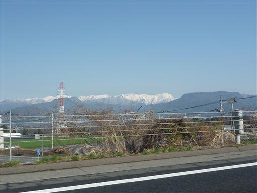
8:23 竜谷寺近くの登山道入口到着。標高480m。
ここには車を2～3台程度停められるスペースがある。
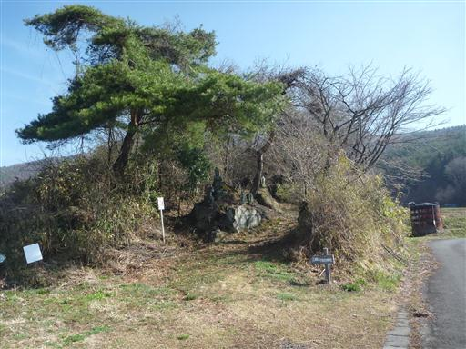
ここは少し高台になっている。遠くに見えているのはこの間登った子持山だ。
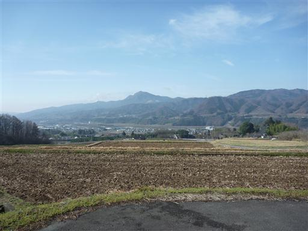
緩い傾斜の尾根を登っていく。なぜか登山道とずれたところに鳥居が立っている。
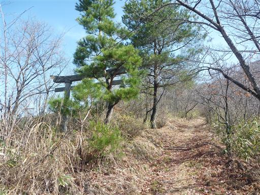
白い山々の頭の部分が見えている。
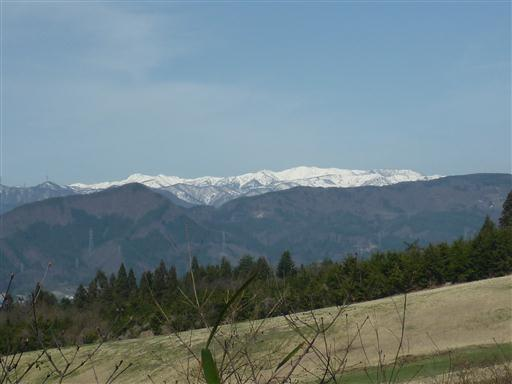
水場に到着する。水はきれいそうだが、太いパイプから出ているのは趣がない。

しばらく登ると車道と合流し、ここからは車道を登っていく。
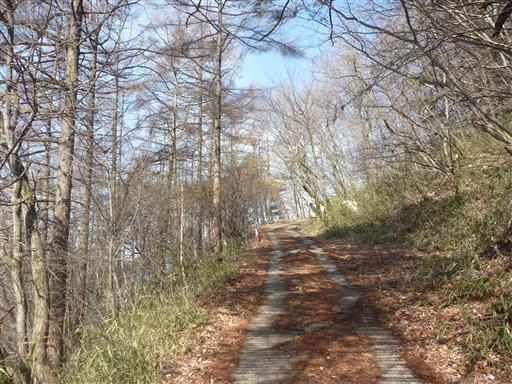
天狗岩入口の標識。「この先1分」と書かれているので行ってみることにする。
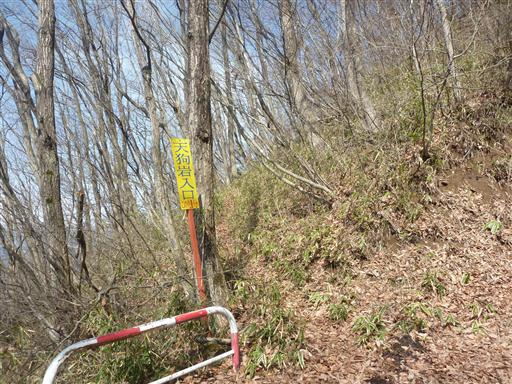
あまり歩かれていないのか、危ういトラバース道が付いている。
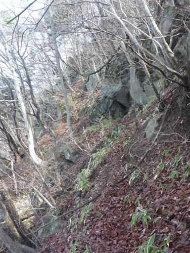
天狗岩に到着。車道からは表記の倍の2分かかった。
大きな岩の下に小さな祠がある。
展望を期待して来たのだが、大した展望は開けない。
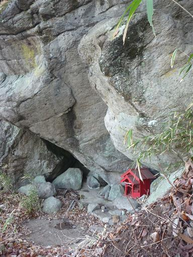
車道の終点から神社の参道を登っていく。辺りには丸い巨岩が転がっている。
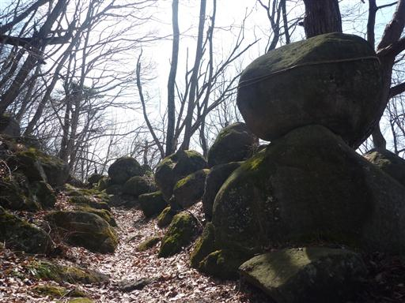
自然に転がっている石なのか、それとも人の手で乗せられた石なのかよく分からない。
石の上に小さな祠が祀られている。
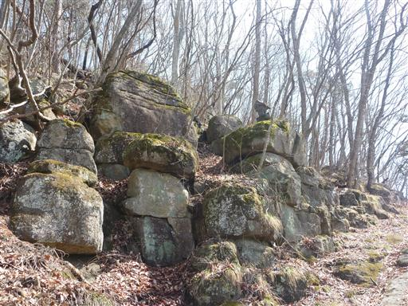
足元に咲くスイセン。普通のスイセンと違って花弁がたくさんある。
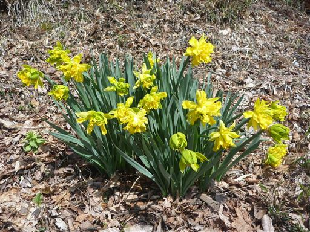
河内神社前に到着。古びて歪んだ石段を登る。
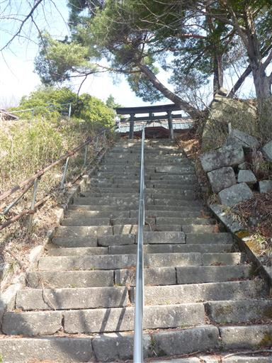
河内神社。人気は少ないが意外に立派な神社だ。
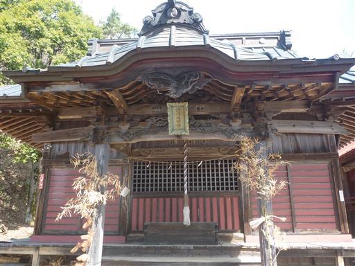
ここからは南の展望が広がる。
一際背の高い赤城山は雲に覆われ頭だけが見えている。
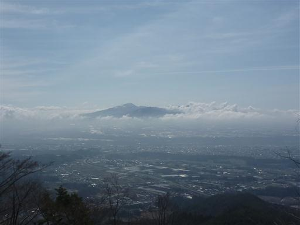
こちらは子持山。さきほどまできれいに見えていたのに、雲がかかり始めている。
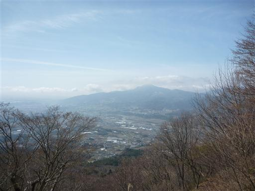
足元にはフキノトウが生えている。見るのは久しぶりだ。
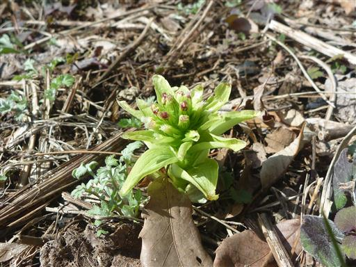
この山にはパラグライダーの離陸場がある。展望を求めて少し寄り道してみる。
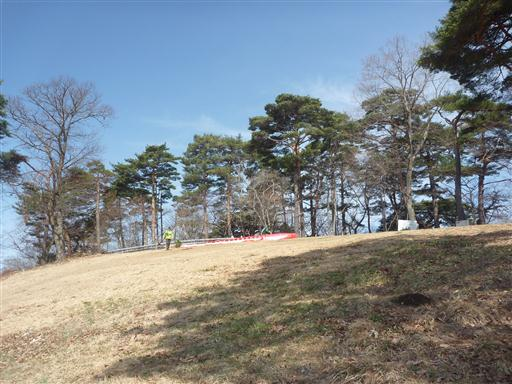
ここからは小野子三山と遠くに浅間山が見えている。浅間山はまだ雪で真白だ。
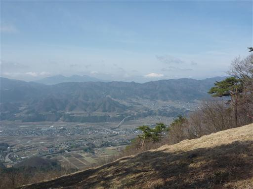
河内神社を過ぎるとテーブルマウンテンの上部に出て、アップダウンがほとんどなくなる。
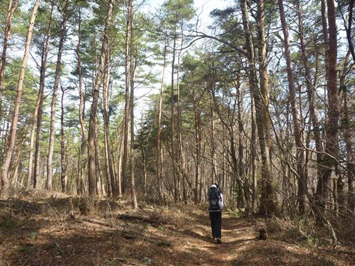
左手には平らな地形が広がっている。この辺りは松林が続いている。
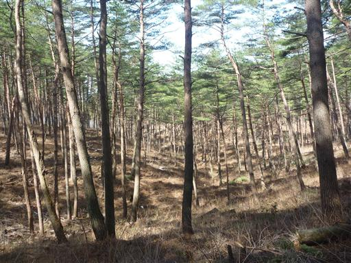
盛土されたような登山道。
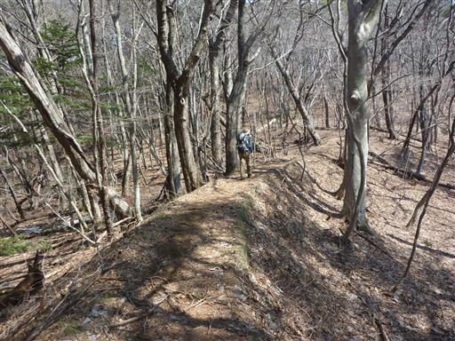
途中で登山道に雪が現れる。
北に向かうにつれて少しずつ標高が上がっていき、それにつれて雪の量が増えていく。
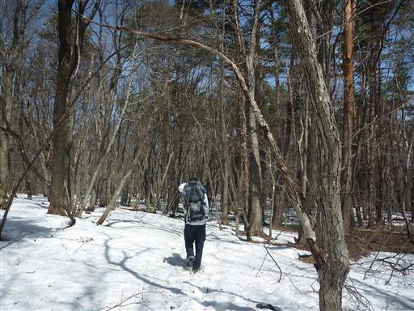
こちらは4本に幹が分かれている松。こちらも巨木だ。
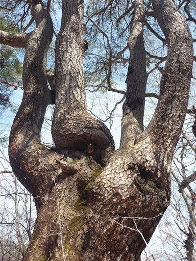
途中から植生が変わって松林はなくなる。色々な木がごちゃ混ぜに生えている。
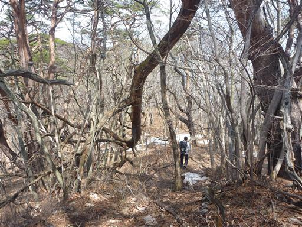
11:19 上州三峰山山頂到着。標高1123m。
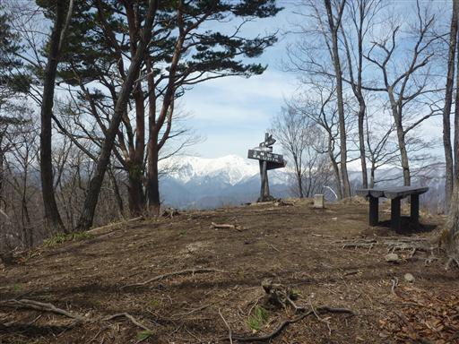
さほど展望の良くない山頂だが、北の方だけ木が刈り払われている。
目の前には谷川岳が見えている。
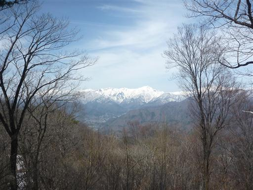
こちらは谷川連峰の東にある朝日岳。まだ山頂部は真白だ。
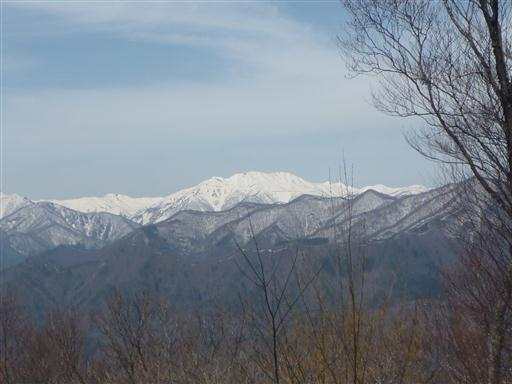
上州武尊山。存在感のある巨大な山だ。
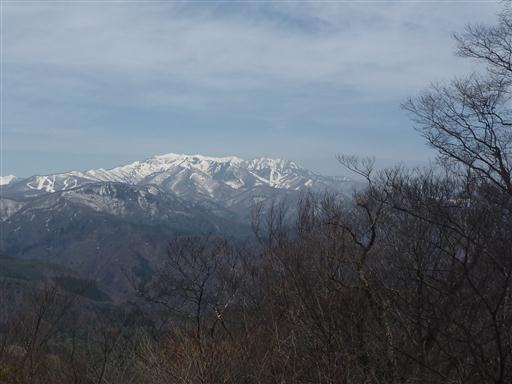
山頂で展望を眺めながら昼食をとり、下山を開始する。
途中までは元来た道を引き返し、そこから三峰沼経由で下る予定だ。
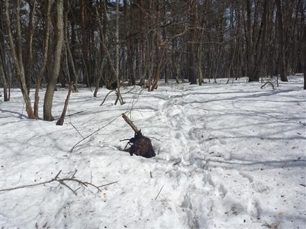
三峰沼との分岐点に到着。ここから尾根を外れて緩やかな斜面を下って行く。
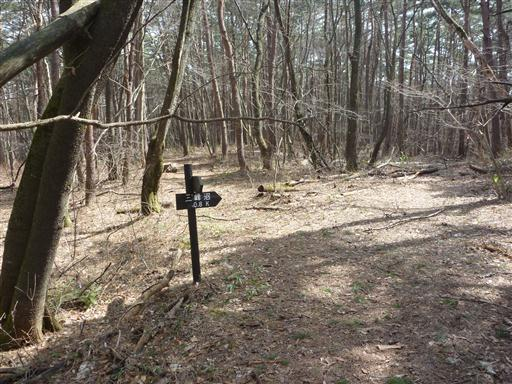
小さな沢があちこちから集まっている。
尾根から少し下っただけなのに、もうチョロチョロと水が流れている。
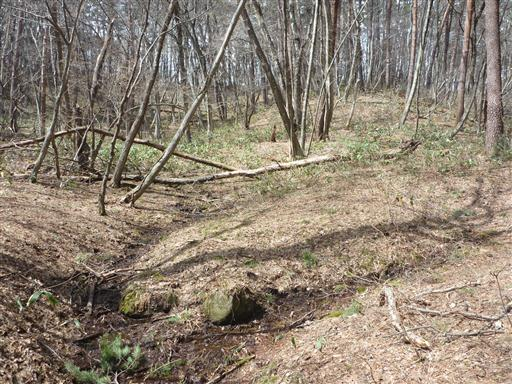
小さな沢に沿って斜面を下って行く。
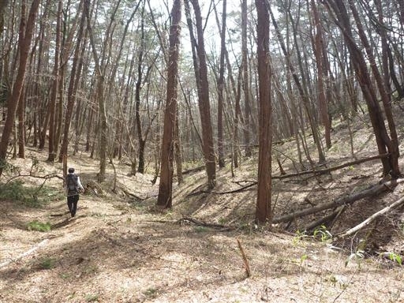
三峰沼近くにミズバショウが咲いている。まだ咲き始めでどの花も小さい。
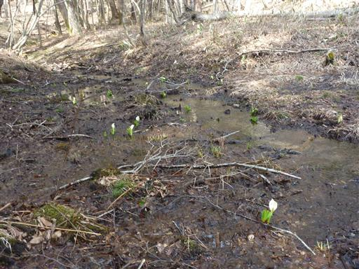
三峰沼に到着。人通りの少ない静かな沼だ。
この三峰沼と隣にある小沼は江戸時代に川を堰き止めて造られた人工の沼らしい。
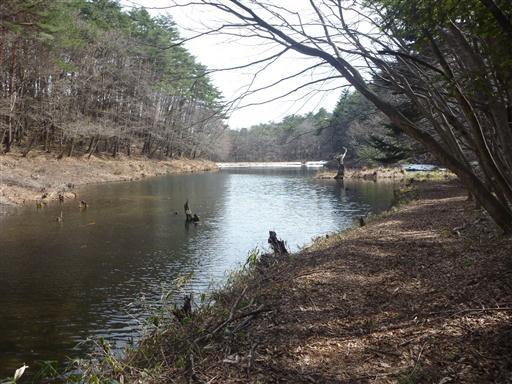
沼にはコイが泳いでいる。
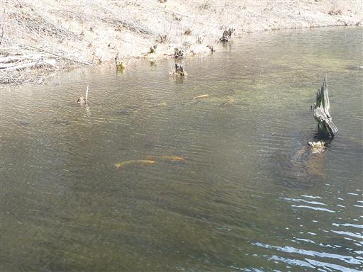
沼の中に小島があり、どうやって渡ったのか、小さな祠が祀られている。
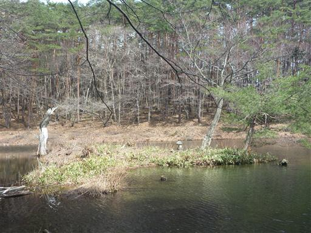
三峰沼からの下山道は道幅が広く、こちらの道もよく歩かれているようだ。
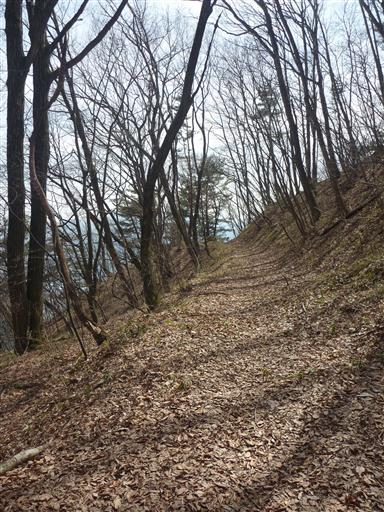
左手に滝の音がしたので、登山道を外れて見に行く。初瀬の滝だ。
辺りは美しい岩壁が広がっている。目の前は断崖で結構危険な場所だ。
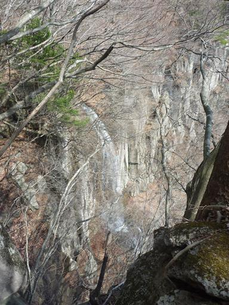
登山道に復帰し、あとはジグザグにつけられた道を下って行く。
すぐそばには美しい岩壁や滝があるのに、この道からは全く望むことができない。
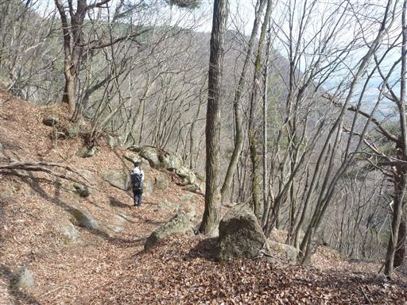
最後は笹に覆われた林道を下って行く。
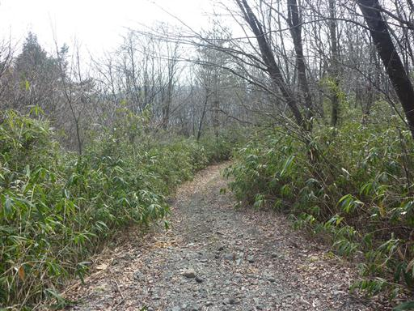
下山。ガイドブックに載っていた石切場跡はどこにあるのか分からなかった。
車を停めた場所まではここから車道を15分程度だ。
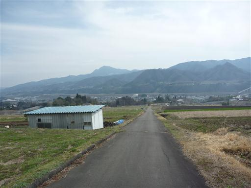
麓から上州三峰山を望む。山頂は奥にあってここからは見えない。
結局、三峰がどのピークを指していたのか、いまいち判然としなかった。
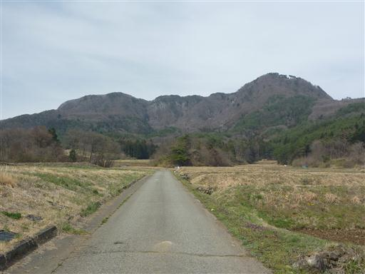
14:49 登山道入口到着。
辺りはすっかり春でカエルが出てきている。
変わった山容の山は歩いて楽しく、早春の美しい景色が広がるハイキングだった。
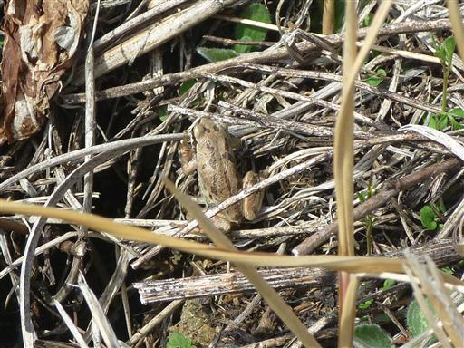